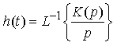

Оценка и обеспечение эксплуатационно-техни-ческих характеристик (свойств) при проектировании подсистем автоматического управления
Выбор и обоснование функциональной схемы автоматической системы управления. Условные обозначения
Систему управления можно разбить на блоки, имеющие вход и выход (объект, регулятор, привод, измерительная система). Для того, чтобы показать взаимосвязи этих блоков, используют структурные схемы. На них каждый элемент изображается в виде прямоугольника, внутри которого записывается его передаточная функция. Вход и выход блока показывают соответственно «входящей» и «выходящей» стрелками(рисунок 1).
Рисунок 1 – Примеры структурной схемы блоков системы управления
Т.е. существует две формы записи:
• операторная запись, когда передаточная функция записывается как функция оператора дифференцирования p, входы и выходы блоков – функции времени;
• запись в изображениях, когда передаточная функция записывается как функция комплексной переменной s, а для обозначения входов и выходов используют их изображения по Лапласу.
Однако суть дела от этого не меняется. Поэтому дальше при обозначении сигналов мы, несколько жертвуя строгостью ради простоты записи, будем обозначать сигналы строчными буквами, не указывая независимую переменную (t или s), а в записи передаточных функций будем использовать переменную s, как принято в литературе. Для суммирующих элементов используют специальное обозначение – круг, разбитый на сектора. Если сектор залит черным цветом, поступающий в него сигнал вычитается, а не складывается с другими. Разветвление сигнала обозначается точкой, как и радиотехнике.
Далее, при обозначении сигналов мы будем обозначать сигналы строчными буквами, не указывая независимую переменную (t или s), а в записи передаточных функций будем использовать переменную s, как принято в литературе. Для суммирующих элементов используют специальное обозначение – круг, разбитый на сектора. Если сектор залит черным цветом, поступающий в него сигнал вычитается, а не складывается с другими. Разветвление сигнала обозначается точкой, как и радиотехнике(рисунок 2).
Рисунок 2 – Примеры обозначения сигналов
Многие инженерные (классические) методы исследования систем управления основаны на использовании передаточных функций. Для построения передаточной функции системы между заданными входом и выходом нужно преобразовать структурную схему так, чтобы в конечном счете остался один блок с известной передаточной функцией. Для этого используют структурные преобразования. Легко показать, что передаточные функции параллельного и последовательного соединений равны соответственно сумме и произведению исходных передаточных функций(рисунок 3):
Рисунок 3 – Примеры схем передаточных функций
Для контура с обратной связью (рисунок 4):
Рисунок 4 – Примеры структурных схем для контура с обратной связью
Звено можно переносить через сумматор как вперед, так и назад. Чтобы при этом передаточные функции не изменились, перед сумматором нужно поставить дополнительное звено(рисунок 5):
Рисунок 5 – Примеры структурных схем с сумматором
Обратите внимание, что передаточные функции от обоих входов к выходу на двух схемах одинаковые. Для следующей пары условие также выполняется(рисунок 6):

Рисунок 6 – Примеры структурных схем с сумматором
Звено можно переносить также через точку разветвления, сохраняя все передаточные функции(рисунок 7):
Рисунок 7 – Примеры структурных схем с сумматором
Эти две схемы тоже равносильны(рисунок 8):
Рисунок 8 – Примеры структурных схем с сумматором
Типовая одноконтурная система
Применим показанные выше приемы для вычисления передаточных функций рассмотренной выше системы. Здесь три входа (x, g и m), а в качестве выходов обычно рассматривают выход системы y, сигнал управления u и ошибку e (рисунок 9). Таким образом, всего можно записать 9 передаточных функций, соединяющих все возможные пары вход-выход.
Рисунок 9 – Пример одноконтурной системы
Сначала найдем полную передаточную функцию привода (обведенного штриховой рамкой), используя формулу для контура с отрицательной обратной связью:
Получаем следующую схему:
Рисунок 10 – Пример упрощения одноконтурной системы
Теперь найдем передаточные функции от входа x ко всем выходам. Для этого все остальные входы будем считать нулевыми и удалим со схемы. Кроме того, заменим последовательное соединение звеньев с передаточными функциями C(s), R(s) и P(s) на одно звено:
Рисунок 11 – Пример упрощения одноконтурной системы
Для получения окончательного результата снова используем формулу для контура с отрицательной обратной связью:
Принимая в качестве выходов управление u и ошибку e, получим похожие схемы:
Рисунок 12 – Итог упрощения одноконтурной системы
Первая из этих схем дает передаточную функцию по управлению Wu(s), а вторая – передаточную функцию по ошибке We(s) (здесь блок с передаточной функцией, равной единице, можно было вообще не рисовать). Снова применяя формулу для контура с отрицательной обратной связью, получаем:
Используя этот подход, легко найти передаточные функции для других входов.
Оценка качества и синтез линейных непрерывных и дискретных систем автоматического регулирования
Линейные непрерывные и дискретные системы
По характеру сигналов системы могут быть:
- непрерывными, в которых все сигналы – функции непрерывного времени, определенные на некотором интервале;
- дискретными, в которых используются дискретные сигналы (последовательности чисел), определенные только в отдельные моменты времени;
- непрерывно-дискретными, в которых есть как непрерывные, так и дискретные сигналы.
Непрерывные (или аналоговые) системы обычно описываются дифференциальными уравнениями. Это все системы управления движением, в которых нет компьютеров и других элементов дискретного действия (микропроцессоров, логических интегральных схем).
Микропроцессоры и компьютеры – это дискретные системы, поскольку в них вся информация хранится и обрабатывается в дискретной форме. Компьютер не может обрабатывать непрерывные сигналы, поскольку работает только с последовательностями чисел.
Существуют также и гибридные непрерывно-дискретные системы, например, компьютерные системы управления движущимися объектами (кораблями, самолетами, автомобилями и др.). В них часть элементов описывается дифференциальными уравнениями, а часть – разностными. С точки зрения математики это создает большие сложности для их исследования, поэтому во многих случаях непрерывно-дискретные системы сводят к упрощенным чисто непрерывным или чисто дискретным моделям.
Частотные оценки качества
Качество системы можно оценивать не только во временной области (переходный процесс во времени), но и в частотной (по частотной характеристике). Из частотных оценок наиболее важны запасы устойчивости. Проблема в том, что поведение реального объекта всегда несколько отличается от принятой модели, более того, динамика может меняться во времени. Поэтому недостаточно спроектировать просто устойчивую систему, нужно, чтобы система сохранила устойчивость при некоторых изменениях параметров объекта и регулятора в сравнении с расчетными, то есть, обладала запасами устойчивости.
Обычно рассматривают запасы устойчивости по амплитуде и по фазе. Запас устойчивости по амплитуде gm это дополнительное усиление контура, которое необходимо, чтобы вывести систему на границу области устойчивости (рисунок 13). Эта величина измеряется в децибелах.
Рисунок 13 – Определение запасов устойчивости по АФЧХ системы
Запас по амплитуде вычисляется по формуле gm= 20log (1/Ag), где Ag < 1 – значение амплитудной характеристики на частоте ωg, где фазовая характеристика равна − 180°. В практических задачах нужно обеспечивать запас по амплитуде не менее 6 дБ.
Запас устойчивости по фазе φm – это дополнительный сдвиг фазы («поворот» частотной характеристики против часовой стрелки), который необходим для того, чтобы вывести систему на границу устойчивости (рисунок 14). Он определяется на частоте среза ωc, где (А(ωс)=1). Запас по фазе должен быть не менее 30°.
Рисунок 14 – Определение запасов устойчивости по ФЧХ системы
Если в системе есть запаздывание на время τ, каждая точка годографа частотной характеристики дополнительно поворачивается против часовой стрелки на угол, равный τω для частоты ω. Поэтому запасы устойчивости (как по амплитуде, так и по фазе) уменьшаются. На рисунке синяя линия соответствует системе без запаздывания, а красная – той же системе с запаздыванием. Видно, что во втором случае запасы устойчивости существенно меньше.
Запасы устойчивости легко определяются по логарифмических частотным характеристикам (рисунок 15):
Рисунок 15 – Определение запасов устойчивости по ЛАЧХ и ЛФЧХ системы
Заметим, что запас по амплитуде может быть равен бесконечности, если фазовая характеристика не пересекает линию − 180°.
К сожалению, в некоторых случаях классические запасы устойчивости (по амплитуде и фазе) дают не совсем верное представление о том, насколько система действительно близка к границе устойчивости. Поэтому в качестве единой характеристики иногда используют кратчайшее расстояние γ от годографа до точки (−1; 0) (рисунок 16).
Рисунок 16 – Определение запасов устойчивости при помощи годографа
Еще одна аналогичная характеристика называется показателем колебательности М. Она определяется по амплитудной частотной характеристике замкнутой системы как отношение ее максимума к значению на нулевой частоте (рисунок 17).
Рисунок 17 – Определение запасов устойчивости при помощи показателя колебательности
Для каждого значения М можно нарисовать «запретную области», в которую не должна заходить частотная характеристика разомкнутой системы, если ее показатель колебательности должен быть меньше M. Эта область имеет форму круга радиуса R = (M / (M2 - 1)), центр которого находится в точке (− (M2 / (M2 - 1); 0). На рисунке 18 показаны границы запретных областей для различных значений M.
Рисунок 18 – Границы запретных областей для различных значений М
При окружность имеет бесконечный радиус (превращается в вертикальную линию) и проходит через точку (− 0,5; 0). При увеличении M радиус окружности уменьшается.
Корневые оценки качества
Многие свойства системы можно предсказать, посмотрев на расположение корней характеристического полинома Δ(s) на комплексной плоскости. Прежде всего, все корни Δ(s) для устойчивой системы должны находиться в левой полуплоскости, то есть слева от мнимой оси. Быстродействие системы определяется степенью устойчивости η – так называется расстояние мнимой оси до ближайшего корня. На рисунке точками отмечены положения корней характеристического полинома. Он имеет два вещественных корня (1 и 4) и пару комплексно сопряженных корней (2 и 3). Степенно устойчивости определяется вещественным корнем 1, потому что он находится ближе всех к мнимой оси.
Рисунок 19 – Определение быстродействия системы по степени устойчивости η
Этот корень называется доминирующим, он определяет самые медленные движения в системе и время переходного процесса, которое может быть примерно рассчитано по формуле tn = 2 / η. Корни 2, 3 и 4 соответствуют более быстрым движениям.
Обратите внимание, что степень устойчивости, несмотря на название, ничего не говорит о близости системы к границе устойчивости, она только характеризует быстродействие. Параметр, определяющий скорость затухания колебаний в системе, называется колебательностью. Колебательность η для пары комплексно-сопряженных корней α ± jβ вычисляется как отношение мнимой и вещественной частей корня (по модулю):
Чем больше эта величина, тем слабее затухают колебания, вызванные этими корнями, за 1 период колебаний.
Линии постоянной колебательности – это лучи, выходящие из начала координат. При проектировании систем обычно требуется обеспечить быстродействие не ниже заданного (степень устойчивости не меньше заданной ηmin) и колебательность не выше заданной μmax. Эти условия определяют усеченный сектор на комплексной плоскости (рисунок 20).

Рисунок 20 – Определение быстродействия системы по ограничениям степени устойчивости и колебательности
Оценки качества регулирования
Кроме устойчивости САУ анализируются с точки зрения качества регулирования. В общем случае качество регулирования представляет собой совокупность точности в установившемся режиме и качества переходных процессов.
Оценки качества могут быть прямыми и косвенными. В свою очередь прямые и косвенные могут быть статическими и динамическими. Динамические оценки характеризуют переходной процесс, а статические - установившийся режим.
Прямые оценки определяются непосредственно по переходной характеристике по каналу управления или возмущения (рисунок 21)
Рисунок 21 – Переходная характеристика
Если переходная характеристика представляет собой затухающие колебания, то система считается устойчивой. При этом допускается не более 2-3 колебаний. К основным прямым оценкам относятся следующие: s - регулирование, tp - время регулирования, e - декремент затухания, w - частота колебаний, n - число колебаний, которое имеет переходная характеристика за время регулирования tp, tH - время нарастания переходного процесса, tmax - время достижения первого максимума.
Перерегулирование есть разность между максимальным значением hmax1 переходной характеристики и её установившимся значением, выраженная в процентах:
В большинстве случаев требуется, чтобы перерегулирование не превышало 10 - 30%,
Время регулирования оценивает длительность переходного процесса. Так как теоретически длительность переходного процесса идеальных систем равно ∞, за время регулирования принимается тот интервал времени, по истечении которого отклонение переходной характеристики от установившегося значения не превышает некоторой заданной величины q. Значение q выбирают обычно равным 5%.
При заданных значениях s и tp переходная характеристика не должна выходить из определенной области, которая называется областью допустимых отклонений.
В статическом режиме САУ оценивается коэффициентом статизма (астатизма):
где x - задание;
yуст - установившееся значение рабочего параметра.
Рассмотренные выше оценки качества относятся к прямым. Вместе с тем существуют косвенные, среди которых наибольшее распространение получили интегральные оценки. Существует две разновидности интегральной оценки: линейная и квадратичная. Численно линейная интегральная оценка равна площади, ограниченной кривой ошибки иди разности Х - Y. Значение Y берется в пределах временного интервала от 0 до tp. Линейная интегральная оценка определяется следующим выражением:
Эта оценка может быть применена только при монотонных переходных процессах при отсутствии колебаний.
Квадратичная интегральная оценка применяется как при монотонных, так и при колебательных переходных процессах и определяется следующим соотношением:
Недостаток квадратичной интегральной оценки заключается в том, что различные по характеру переходные процессы могут иметь одну и ту же величину оценки.
Анализ динамических свойств технических систем с автоматическим управлением
Характеристиками систем автоматического управления являются:
1) Статические характеристики;
2) Динамические характеристики.
Статической характеристикой называется отношение выходной величины к входной величине в установившемся режиме. Статические характеристики определяют статику системы, т.е. ее поведение в установившемся режиме. Статические характеристики позволяют: определить коэффициент усиления системы, степень ее нелинейности, величину статизма, произвести согласование рабочих точек системы.
Динамические характеристики определяют динамику системы, т.е. ее поведение в неустановившемся (переходном) режиме. При этом исполь-зуют следующие основные динамические характеристики:
– передаточная функция;
– временные характеристики;
– частотные характеристики.
Передаточная функция системы. Понятие передаточная функция является наиболее важной категорией в теории автоматического управления и регулирования. Передаточная функция является своего рода математической моделью САУ, т.к. полностью характеризует динамические свойства системы.
Передаточная функция представляет собой отношение изображение по Лапласу выходной величины Y(S) к изображению входной величины Х(S), т.е.
Учитывая условия для линейных систем уравнение (3.10) запишем в следующем виде:
Поскольку для линейных систем можно применить принцип наложения, то будет справедливым выделить следующие два случая:
- сигнал Z(S) = 0, тогда Q(S)Y(S) = R1(S)X(S)
- сигнал X(S) = 0, тогда Q(S)Y(S) = R2(S)Z(S)
Тогда, для любой САР, имеющей входы по управлению и по возмущению, можно определить две передаточные функции:
Уравнение (3.12) представляет передаточную функцию по управлению, а выражение (3.13) представляет передаточную функцию по возмущению.
Как известно, собственный оператор Q(p) может быть записан в следующем виде.
Соответственно оператор управляющего воздействия R1(р) и оператор возмущающего воздействия R2(p) выразим следующим образом:
Следовательно, передаточные функции по управлению и по возмущению представляют собой отношения следующих полиномов:
Для физической реализуемости системы необходимо выполнить условие n > m и n > k.
Передаточные функции содержат особые точки на комплексной плоскости - нули и полюса. Полюса - это те значения S, при которых передаточная функция превращается в бесконечность. Для определения полюсов необходимо собственный оператор (знаменатель передаточной функции) приравнять к нулю и произвести решение алгебраического уравнения относительно S. Нули - это те значения S, при которых передаточная функция равна нулю. Для нахождения нулей числитель передаточной функции приравнивается к нулю и полученное алгебраическое уравнение решается относительно S. В связи о этим передаточная функция может быть представлена как отношение произведений элементарных сомножителей:
где λi - полюса передаточной функции; νk - нули передаточной функции.
Если задана структура САУ, то можно определить передаточную функцию относитеλльно любых двух точек структуры. При этом необходимо использовать существующие правила и метода структурных преобразований.
Временные характеристики определяются как реакция системы на типовые воздействия при нулевых начальных условиях. К основным временным характеристикам относятся переходная функция и функция веса.
Переходная функция h(t) – реакция системы на единичное воздействие при нулевых начальных условиях. Переходная функция имеет вид как на рис.22.

Рисунок 22 – Переходная функция
Весовая функция k(t) – реакция системы на единичный импульс при нулевых начальных условиях. Весовая функция имеет вид рис.23
Рисунок 23 – Весовая функци
Частотные характеристики. В условиях реальной эксплуатации САУ часто возникает необходимость определить реакцию на периодические сигналы, т.е. определить сигнал на выходе САУ, если на один из входов подается периодически сигнал гармонической формы. Решение этой задачи возможно получить путем использования частотных характеристик. Частотные характеристики могут быть получены экспериментальным или аналитическим путем. При аналитическом определении исходным моментом является одна из передаточных функций САУ (по управлению или по возмущению). Возможно также определение частотных характеристик. Возможно также определение частотных характеристик исходя из передаточных функций разомкнутой системы и передаточной функции по ошибке.
Если задана передаточная Функция W(S), то путём подставки S=jω получаем частотную передаточную функцию W(jω), которая является комплексным выражением т.е. W(jω)=A(ω) + jK(ω), где А(ω) вещественная составляющая, а К(ω) мнимая составляющая. Частотными характеристиками являются:
1) АФХ – амплитудно-фазовая частотная характеристика рис.24;
Рисунок 24 – Амплитудно-фазовая частотная характеристика
2) ВЧХ – вещественная частотная характеристика;
3) МЧХ – мнимая частотная характеристика;
4) АЧХ – амплитудно-частотная характеристика рис.25;
Рисунок 25 – Амплитудно-частотная характеристика
5) ФЧХ – фазовая частотная характеристика рис.26;
Рисунок 26 – Фазовая частотная характеристика
6) Логарифмические частотные характеристики– амплитудная и фазовая частотные характеристики в логарифмических координатах. Графики характеристик представлены на рис.27 и 28.
Рисунок 27 – Амплитудная частотная характеристика в логарифмических координатах
Рисунок 28 – Фазовая частотная характеристика в логарифмических координатах
Важными показателями качества системы являются устойчивость и точность. Устойчивость определяется как для линейных, так и нелинейных систем.
Линейная система называется устойчивой, если при выведении ее внешними воздействиями из состояния равновесия (покоя) она возвращается в него после прекращения внешних воздействий. Если после прекращения внешнего воздействия система не возвращается к состоянию равновесия, то она является неустойчивой. Для нормального функционирования системы управления необходимо, чтобы она была устойчивой, так как в противном случае в ней возникают большие ошибки.
Определение устойчивости обычно проводят на начальном этапе создания системы управления. Это объясняется двумя причинами. Во-первых, анализ устойчивости довольно прост.
Во-вторых, неустойчивые системы могут быть скорректированы, т.е. преобразованы в устойчивые с помощью добавления специальных корректирующих звеньев.
Оценка устойчивости систем определяется с помощью различного рода критериев. Такими критериями являются:
1) Критерий Гурвица. Сущность критерия заключается в составлении матрицы Гурвица рис.29. После составления матрицы определяются все её определители
Рисунок 29 – Матрица Гурвица
По диагонали матрицы от верхнего левого угла записываются по порядку все коэффициенты уравнения начиная с а1. Затем каждый столбец матрицы дополняется таким образом, чтобы вверх от диагонали индексы коэффициентов увеличивались, а вниз – уменьшались.
Для устойчивой системы необходимым и достаточным является то, чтобы при а0>0 все диагональные определители были также положительными, т.е.
Система будет нейтральной в том случае, если Δn=0 и все предыдущие определители положительны.
2) Критерий Найквиста. Это частотный критерий, позволяющий судить об устойчивости системы замкнутой системы управления по АФЧХ разомкнутой. Формулировка критерия следующая: если система имеет l правых корней, то для того, чтобы замкнутая система была устойчива, необходимо АФЧХ разомкнутой системы W(jω) при изменениии частоты ω от -∞ до +∞ охватывала точку (-1;j0) на комплексной плоскости в положительном направлении l раз. На рис. 30 представлен график для случая l=2.
Рисунок 30 – Критерий Найквиста
Основным назначением автоматической системы является более точное воспроизведение управляющего сигнала. Точность системы оценивается разностью управляющего сигнала v(t) и выходом y(t), т.е. величиной ошибки е(t)= v(t) - y(t). Очевидно чем меньше величина ошибки, тем система точнее. На практике пользуются понятием установившейся ошибки ey(t).
Существуют три вида ошибок:
1. Статическая ошибка ey0, которая определяется как
2. Ошибка по скорости ey1 равная
3. Ошибка по ускорению ey2, которая равна
Для уменьшения ошибок необходимо увеличивать коэффициент усиления К, также ошибки уменьшаются с ростом порядка астатизма. Подводя итог можно скзать, что качество системы определяется устойчивостью и точностью системы.
3) Критерий Михайлова. Предполагает построение годографа на комплексной плоскости. Для построения годографа получают аналитическое выражение вектора D(j):
Построение годографа производится по уравнению вектора D(j) при изменении частою от 0 до ∞.
Для случая устойчивости системы n-го порядка необходимо и достаточно, чтобы при ω = 0 годограф начинался на вещественной положительной оси и обходил против часовой стрелки n квадрантов, нигде не обращаясь в нуль.
Если годограф начинается в нулевой точке комплексной плоскости или проходит через эту точку при определенной частоте, то система считается нейтральной.